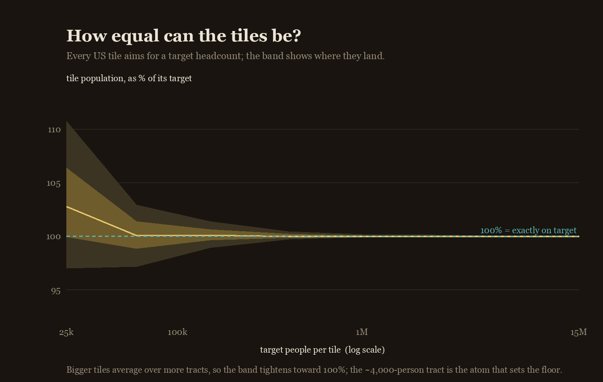
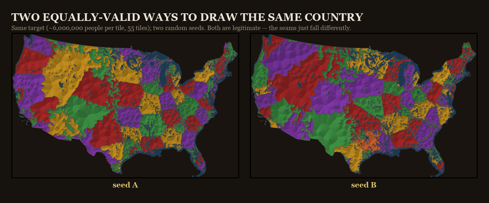
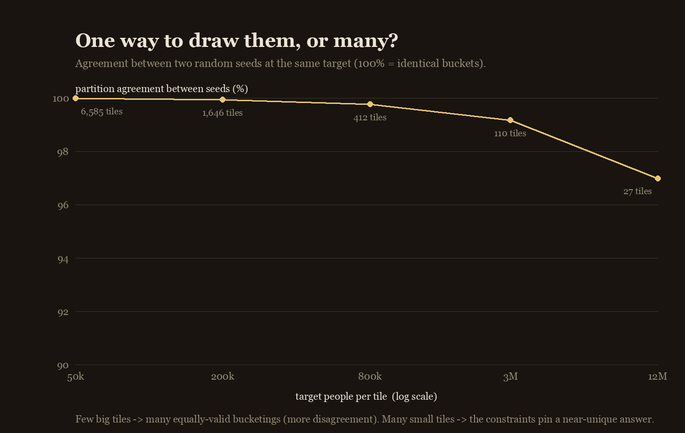

The bigger you make each tile, the more exactly equal you can get — every tile averages over more census tracts, so its population lands closer to the target. Above about 150,000 people per tile they're essentially exact; only very small tiles (a few tracts each) leave real slack. The chart below shows the spread at each target size:

But the map at the top of this page isn't that tight on purpose. Forcing every tile to be exactly a million makes them stretch out into thin, gerrymandered shapes. So the displayed map trades a little equality for rounder tiles: most land within ±5% of a million, and none are allowed past ±10%.
Re-roll the random seed and you get a different — equally valid — bucketing:

The tiles grow from randomly-ordered starting points, and the equalising tweaks run in random order too, so the seed decides where buckets start and how ties break. How much that matters depends on tile size: with thousands of small tiles the constraints pin a near-unique answer; with a few dozen big ones, seeds genuinely diverge.

Partitioning a place into equal-population pieces is an old idea. The closest relatives are Neil Freeman's Fifty States with Equal Population, the Engaging Data / FlowingData "split the US by population" interactives, Slate's Equal Population Mapper, and capacity-constrained Voronoi / automated-redistricting methods generally. What's different here is the granularity — hundreds of tiles, so it reads as a texture rather than a few regions — and the art-first execution.
2020 US Census · public domain code: numpy · scipy · pillow MIT licensed
{kind=link}